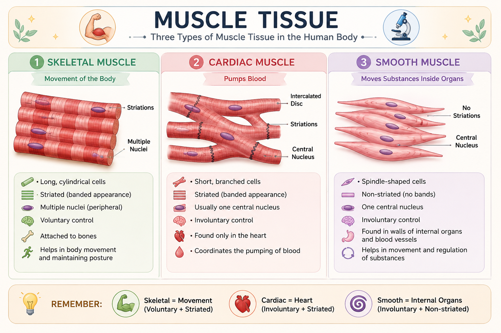

💪 Muscle Tissue
The specialized tissue responsible for contraction, movement, and many essential body functions.
📑 Table of Contents
🎯 Learning Objectives
After completing this lesson, you should be able to:
- Define muscle tissue and explain its main function.
- Identify the three major types of muscle tissue.
- Differentiate skeletal, cardiac, and smooth muscle.
- Understand striations and voluntary versus involuntary control.
- Describe the major functions and locations of each muscle type.
- Recognize the basic clinical importance of muscle tissue.
📖 Introduction
Muscle tissue is a specialized tissue that can contract and produce force.
Muscles help us move our body, maintain posture, pump blood, and move substances through internal organs and passageways.
The human body has three major types of muscle tissue: skeletal muscle, cardiac muscle, and smooth muscle.
📌 Simple Idea
Muscle tissue → Contraction → Force → Movement or body function
💪 What is Muscle Tissue?
Muscle tissue is a specialized tissue whose cells are designed to contract and generate force.
Muscle contraction allows the body to produce movement and also helps important internal processes such as pumping blood and moving substances through organs.
The main contractile proteins involved in muscle contraction are actin and myosin.
📌 Definition
Muscle tissue = Specialized tissue capable of contraction and force production.
⭐ Characteristics of Muscle Tissue
Muscle tissue has special properties that allow it to respond to signals, contract, stretch, and return towards its original length.
⚡ 1. Excitability
The ability of muscle cells to respond to a stimulus, such as a signal from a nerve.
💪 2. Contractility
The ability of muscle cells to contract and produce force.
↔️ 3. Extensibility
The ability of muscle tissue to be stretched without being damaged under normal conditions.
🔄 4. Elasticity
The ability of muscle tissue to return towards its original length after being stretched.
📌 Remember
Excitability → Respond
Contractility → Contract
Extensibility → Stretch
Elasticity → Return
🔬 Types of Muscle Tissue
The human body contains three major types of muscle tissue: skeletal, cardiac, and smooth muscle.
💪 Three Types of Muscle Tissue
The human body has three main types of muscle tissue: skeletal, cardiac, and smooth muscle.

💪 1. Skeletal Muscle
Skeletal muscle is mainly attached to bones and produces voluntary body movements.
- Striated appearance
- Long, cylindrical muscle fibers
- Usually contains multiple nuclei per cell
- Under voluntary control
- Helps with movement and posture
📌 Remember
Skeletal = Movement + Voluntary + Striated
🔬 Explore Skeletal Muscle Structure
Tap a structure to explore it from whole muscle to sarcomere.
❤️ 2. Cardiac Muscle
Cardiac muscle is found only in the heart. Its coordinated contractions pump blood through the circulatory system.
- Striated appearance
- Short and branched cells
- Usually one central nucleus
- Under involuntary control
- Contains specialized connections called intercalated discs
📌 Remember
Cardiac = Heart + Involuntary + Striated
❤️ Explore Cardiac Muscle
From the heart to the microscopic structure of cardiac muscle.
🌀 3. Smooth Muscle
Smooth muscle is found mainly in the walls of internal organs and blood vessels. It produces involuntary movements that help move or regulate substances inside the body.
- No visible striations
- Spindle-shaped cells
- Usually one central nucleus
- Under involuntary control
- Found in organs such as the stomach, intestines, urinary bladder, and blood vessels
📌 Remember
Smooth = Internal organs + Involuntary + Non-striated
🌀 Explore Smooth Muscle
From the internal organ wall to the microscopic structure of smooth muscle cells.
Skeletal vs Cardiac vs Smooth Muscle
The easiest way to remember the three muscle tissues is to compare their structure, control, and location.
| Feature | 💪 Skeletal |
❤️ Cardiac |
🌀 Smooth |
|---|---|---|---|
| Striations | Yes | Yes | No |
| Control | Voluntary | Involuntary | Involuntary |
| Cell shape | Long, cylindrical | Short, branched | Spindle-shaped |
| Nuclei | Multiple | Usually one | One |
| Main location | Attached to bones | Heart | Internal organs & vessels |
| Main role | Body movement | Pump blood | Move & regulate substances |
💡 Exam Tip
Skeletal = Voluntary + Striated
Cardiac = Involuntary + Striated
Smooth = Involuntary + Non-striated
🧩 Muscle Structure & Contraction
Muscle cells contain specialized proteins that allow them to contract and produce force.
🔬 Actin and Myosin
Two important contractile proteins are actin and myosin. Their interaction produces muscle contraction.
⚙️ Basic Contraction Idea
During contraction, myosin interacts with actin. This interaction causes the contractile machinery of the muscle cell to generate force.
📌 Simple Sequence
Stimulus → Calcium involvement → Actin & Myosin interaction → Contraction → Force
Actin and myosin are the major proteins involved in muscle contraction.
⚙️ Functions of Muscle Tissue
Although the three types of muscle tissue are different, all are specialized for contraction and force production.
- 💪 Movement: Skeletal muscles produce voluntary body movements.
- 🧍 Posture: Skeletal muscles help maintain body position.
- ❤️ Blood circulation: Cardiac muscle contracts to pump blood.
- 🌀 Movement of substances: Smooth muscle helps move materials through internal organs.
- 🩸 Regulation of blood flow: Smooth muscle in blood vessel walls helps regulate vessel diameter and blood flow.
- 🌡️ Heat production: Skeletal muscle contraction contributes to heat production.
📌 Think of Muscle as a "Mover"
Skeletal → Moves the body
Cardiac → Moves blood
Smooth → Moves and regulates substances
🏥 Clinical Correlation
Understanding normal muscle tissue helps us understand what happens when muscle structure or function is affected.
💪 Muscle Strain
A muscle strain involves injury to a muscle or its associated tendon. It can cause pain, tenderness, and reduced function.
❤️ Cardiac Muscle Injury
Damage to cardiac muscle can interfere with the heart's ability to contract effectively and pump blood.
🧠 Neuromuscular Disorders
Some disorders affect communication between nerves and muscles or directly affect muscle function, leading to weakness or impaired movement.
💡 Clinical Point
Different muscle tissues perform different jobs, so disease affecting skeletal, cardiac, or smooth muscle can produce very different clinical effects.
🧠 Memory Trick
💪 Skeletal → MOVE
❤️ Cardiac → PUMP
🌀 Smooth → PUSH
💪 Skeletal:
Voluntary + Striated
❤️ Cardiac:
Involuntary + Striated
🌀 Smooth:
Involuntary + Non-striated
📌 Quick Revision
✅ Muscle tissue is specialized for contraction.
✅ There are three major types: skeletal, cardiac, and smooth.
✅ Skeletal muscle is voluntary and striated.
✅ Cardiac muscle is involuntary and striated.
✅ Smooth muscle is involuntary and non-striated.
✅ Skeletal muscle mainly produces body movement and helps maintain posture.
✅ Cardiac muscle pumps blood through the heart.
✅ Smooth muscle helps move and regulate substances inside the body.
✅ Actin and myosin are major contractile proteins.
✅ Calcium and ATP are important for muscle contraction.
❓ Practice Quiz
Ready to test your understanding of muscle tissue?
Complete the quiz to reinforce today's lesson.